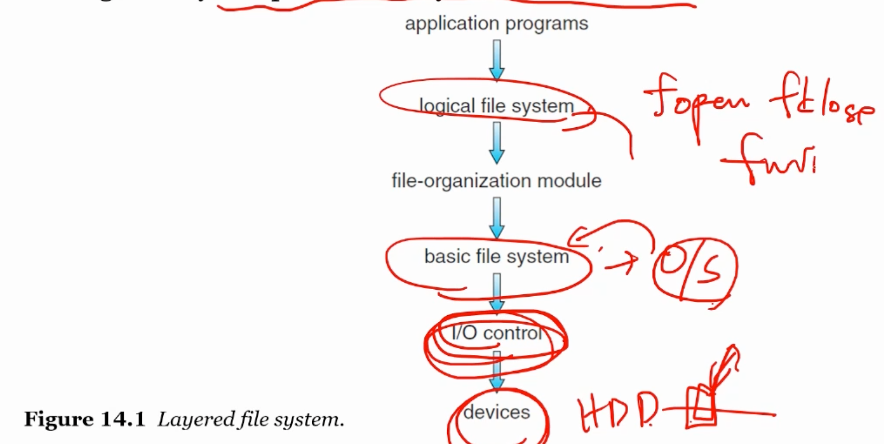

Mass-Storage.
nonvolatile한 애들은 어떻게 할까?
하드디스크도 스케줄링해야된다.
seek time: 헤드를 움직여 섹터를 찾아갈 때까지 걸리는 시간.
FIFO 스케줄링. SCAN 스케줄링. C-SCAN.
Boot Block. 전원이 인가되었을 떄 컴퓨터를 구동시키기 위한 프로그램(bootstrap)을 로딩.
RAID: Redundant Arrays of Independent Disks. 데이터의 읽고 쓰기를 병렬적으로 하기 위해. 저장 매체의 신뢰도를 높이기 위해. Reliability는 redunduncy로 높일 수 있다. Performance는 parallelism으로 높일 수 있다. 드라이버간 데이터를 strip. parity bit -> checksum -> CRC RAID level: 비용-성능 트레이드오프
컴퓨터는 I/O와 computing을 한다. 오히려 I/O가 더 중요하기도 함!
운영체제는 I/O를 manage/control. 운영체제 개발할 때도 커널보다는 device driver 만드는 것을 더 함.
Memory-Mapped I/O. 메모리에 명령을 줘서 control register 역할.
I/O의 세가지 종류
Blocking I/O vs Non-blocking I/O blocking은 쓰레드가 멈춰서 running에서 waiting queue로 감. non-blocking은 바로 return을 한다? Asynchronous system call. 실행을 계속 해나간다. non-blocking read는 즉시 return을 하고 async는 요청을 하고 자기 할 일을 한다.
file / directory
sequential access. 옛날 테이프. 감아서 돌려야되니까. direct access(random access)
Directory Structure. 항목을 하위 경로에 넣을 수 없대.

logical file system부터는 라이브러리 형태로.
Allocation Method. 파일 시스템에서 파일을 어떻게 locate할 것인가.
FAT: File Allocation Table Linked는 sequential할때만 괜찮다! file allocation table을 사용하자. 일반화시키면 Indexed Allocation. 자세한건 리눅스의 ELF file format?
Free-Space Management. 안쓰는 섹터도 알아야한다.